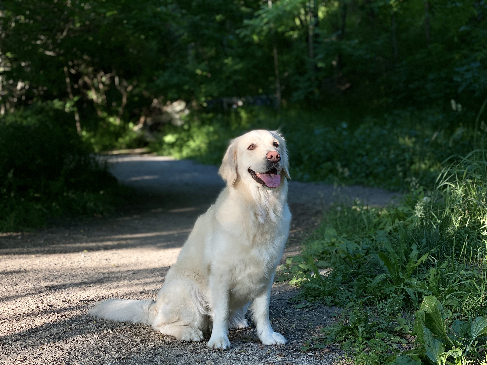
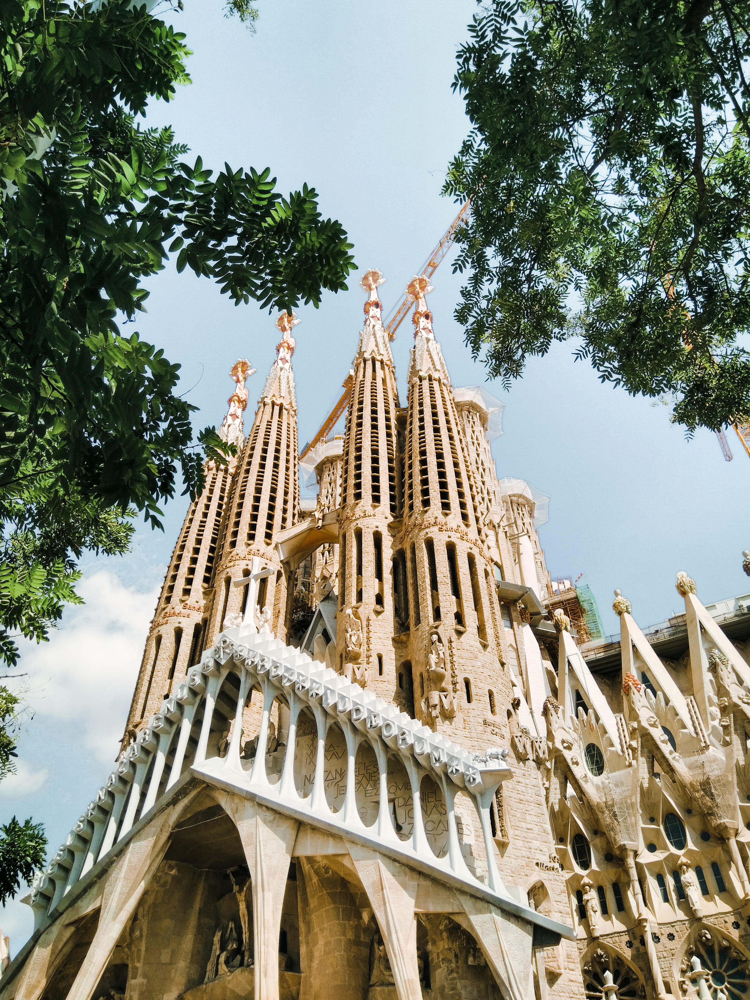
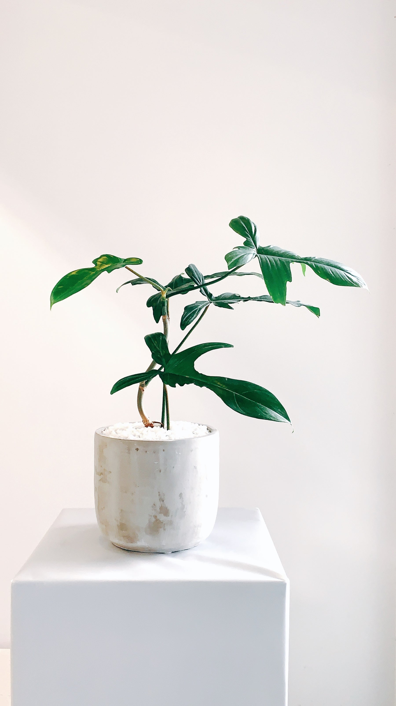
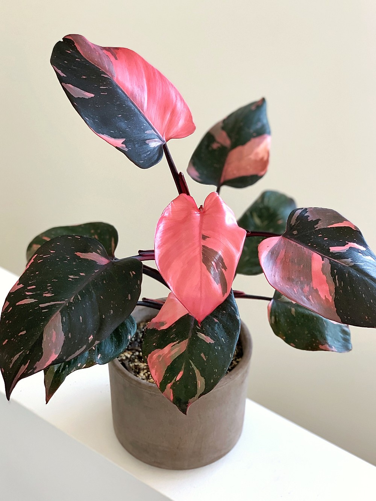
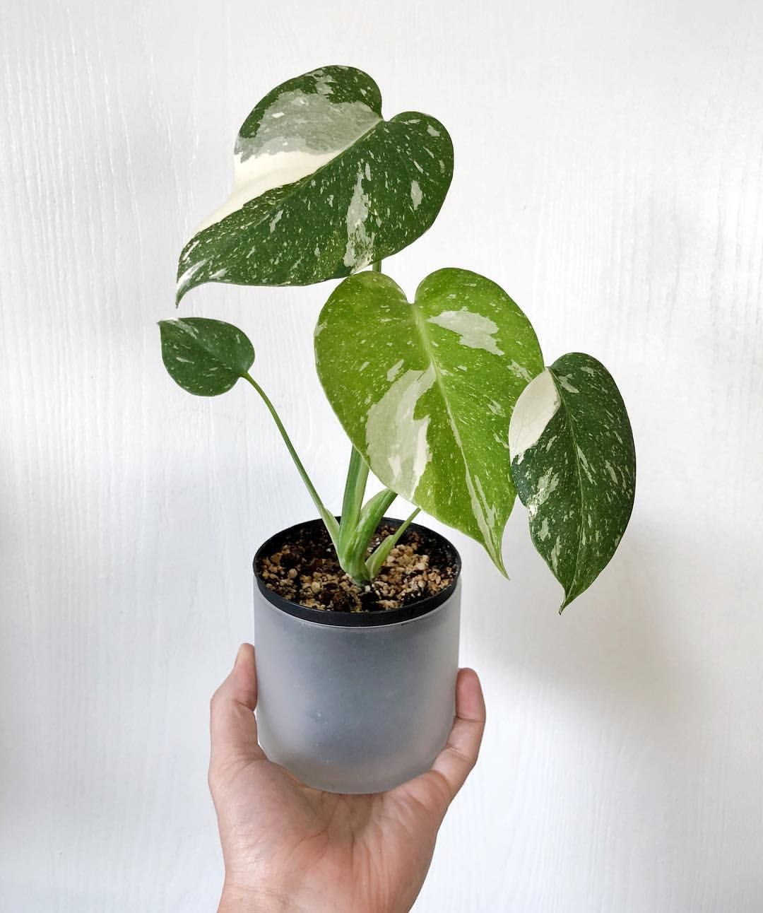

Hi there, I am Yiting! I am currently a graduate student at the University of Michigan, studying human-computer interaction. I started exploring the field of experience design 4 years ago in my studies in architecture as an undergraduate student. Studying Architecture gave me opportunities to explore and create designs, but most of all, it really pushed me to be curious about the user experience gaps in designs. Since then, I have been practicing design skills that allow me to reimagine the relationship that people have with digital and physical environments. I aspire to become a designer who can contribute towards meeting user experience gaps through creativity with problem solving and delicate visual crafts.

Also, meet VaVa! My 4 years old English golden retriever is my design companion. “After a nice long hike and refreshing swim with dad. I like to relax by gnawing on a yummy bone. When I am being a good girl, my daddy will give me my favorite treat - beef jerky.”
My favorite city that I have been to is Barcelona! Barcelona, the cosmopolitan capital of Spain’s Catalonia region, is known for its art and architecture. The fantastical Sagrada Família church and other modernist landmarks designed by Antoni Gaudí dot the city. Museu Picasso and Fundació Joan Miró feature modern art by their namesakes.
My 3 favorite plants: Philodendron Florida Ghost, Philodendron Pink Princess and Monstera Thai Constellation. Philodendron is a large genus of flowering plants in the family Araceae. As of September 2015, the World Checklist of Selected Plant Families accepted 489 species; other sources accept different numbers. The name derives from the Greek words philo- or "love, affection" and dendron or "tree". The generic name, Philodendron, is often used as the English name, "philodendron". Monstera deliciosa, the Swiss cheese plant, is a species of flowering plant native to tropical forests of southern Mexico, south to Panama. It has been introduced to many tropical areas, and has become a mildly invasive species in Hawaii, Seychelles, Ascension Island and the Society Islands.
  